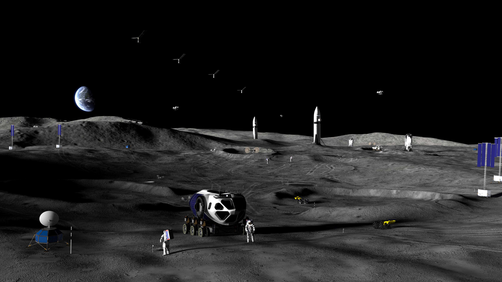
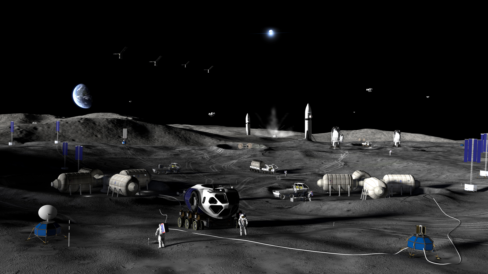

Moon Base I
2026
Blue Origin will launch their endurance lander on the lunar South Pole to study key technologies and deliver science investigations
Moon Base II
July 2026
Astrobotic will land their Griffin lander to further demonstrate commercial landing capabilities and deliver payloads for NASA on the lunar South Pole. Griffin Mission-1 will be the largest lander ever sent to the moon.
Moon Base III
2026
Intuitive Machines will land their Nova C lander to deliver payload to the South Pole and further demonstrate key landing technologies.
MoonFall Drones
2028
NASA plans to land MoonFall drones which use propulsive hops to map and reach the most challenging surfaces of the moon.
VIPER
2027
The Volatiles Investigating Polar Exploration Rover (VIPER) will investigate water and other potential resources on the South Pole.
Lunar Terrain Vehicles
2028
These Lunar Terrain vehicles will allow astronauts to travel further and work longer on the lunar surface. They are designed to last a minimum of one year and around 500-550 miles of travel.
Radioisotope Heating Units
Radioisotope Heating Units will use decaying Radioisotope material to keep electronics within safe temperatures during the freezing dark where solar power isn't available.
Communication and Observation Satellites
This satellite constellation will orbit the moon improving communication and navigation capabilities on and around the moon.
Phase I
2026-2029
Launches
0/25
Landings
0/21
Payload
0kg/4000kg

Pressurized Rover
Being developed by Toyota and the Japanese Space Agency, the pressurized rover will allow astronauts to venture beyond the lunar base where they will be able to conduct research and experiments. The rover will be capable of supporting the astronauts up to 30 days and up to 150 hours in total darkness.
Site Preparation and Logistics Rovers
These rovers will perform preparation activities on potential sites such as excavation and logistics.
Nuclear Power Capabilities
Radioisotope Thermoelectric Generators will be delivered to the lunar surface to demonstrate nuclear power capabilities. These generators will provide power to equipment in the dark where solar power isn't available.
Solar Power
NASA will test solar power units which may be able to help provide power to key technologies.
Surface Communication Capabilities
These devices will be able to provide reliable communication within a 6 mile radius.
Phase II
2029-2032
Launches
0/27
Landings
0/24
Payload
0kg/60000kg

Habitats
Larger habitation modules will support environmental control, power, and life support capabilities to extend lunar operations.
Resource Utilization
NASA could implement technology that will allow for oxygen, water, and hydrogen extractment and 3D printing for construction. This would make lunar exploration safer while reducing launch costs.
Nuclear Power Capabilities
Radioisotope Thermoelectric Generators will be delivered to the lunar surface to demonstrate nuclear power capabilities. These generators will provide power to equipment in the dark where solar power isn't available.
Cargo Return Capabilities
These landers could return up to 500kg of material from the moon to Earth such as samples, research, and hardware.
Logistics
New logistic systems that could potentially increase the amount of payload that can be delivered to the moon.
Phase III
2032+
Launches
0/29
Landings
0/28
Payload
0kg/150000kg
Ignition
Ignition News Conference
NASA Administrator, Jared Isaacman announces new plans to build a moon base and upcoming changes to the Artemis Program and future Artemis missions.
Science and Discovery
NASA announces future plans in Low Earth Orbit and advancing science.
Plans for a Moon Base
NASA outlines detailed plans to build a sustainable moon base.
Moon Base Updates
Moon Base Update #1
June 30, 2026 | NASA provides some updates on our progress and announces some new contracts.
Hello, This is me typing for a few minutes because I'm tryingtotrigger my first heartbeat and I can't really type right now because it's just like that and stuff.
CLPS Launches
Peregrine Mission One
The first commercial mission to the lunar surface launches for the moon.
Intuitive Machines 1
Intuitive Machines 1 by Intuitive Machines launches to the moon.